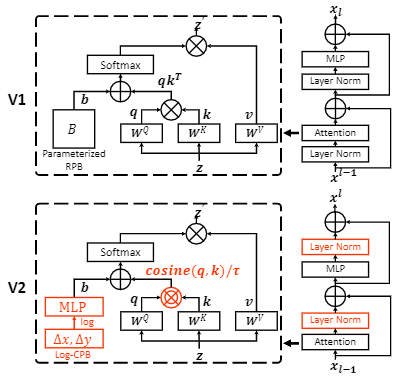

Swin Transformer 系列论文与代码阅读
Swin Transformer是一种基于位移窗口的多尺度Vision Transformer结构，通过在窗口而非全局上计算自注意力，将与图像分辨率呈平方复杂度的MSA减少到了线性复杂度；窗口位移的技巧又使得窗口之间发生连接，从而随着网络深度的增加，使得每一个窗口的感受野不断增大；类似于CNN层级结构的网络设计让其与各种下游任务能够很好的集成，而Transformer捕获长程信息的特点更让其在dense的任务上有了相比于之前要好得多的表现！本文将介绍我个人对Swin Transformer模型结构的理解。
patch和token是同一个事物的不同时期表现形式，说patch时，一般指在patch embedding之前，那个\(ph\times pw \times 3\)的张量，说道token时，通常就是指在embedding之后，每一个特征图上，那些\(1\times d\)的张量，在最初\(d=ph\times pw \times 3\)，后面会随着网络加深而改变；
方法
整体结构
上图分别给出了Swin-T作为backbone的那部分结构和一个Transformer Blocks的结构：
Patch Partition和Linear Embedding
这两部分与ViT中的相同，先将图像划分成\(\frac H4\times\frac W4\times3\)个\(4\times4\)的patch，即图中的\(\frac H4\times\frac W4 \times 48\)，然后再使用线性变换将每个patch的维度从48提升到\(C=96\)；
在代码中为PatchEmbed模块，只用了一个\(k=4,s=4\)的卷积和一些通道顺序交换的操作就完成了这两步：
1 | // init |
Swin Transformer Block
该模块的作用是patch与patch之间的注意力，由W-MSA与SW-MSA与若干MLP级联组成，W-MSA的作用是计算窗口内部各个token的注意力，而SW-MSA还能通过窗口的移位，实现了（原本）跨窗口的token之间的注意力计算；记每个窗口包含\(M\times M\)个token，默认情况下\(M=7\)；
之前有一个token-to-token Transformer的工作是使用了soft partition，即token/patch之间的划分是互相重叠的，尽管token是window的一个组成单元，但是能不能让window划分的时候，也有一些overlap，获得跨window的信息呢？——造成一些冗余，增加了\(M\)的大小，增加了计算复杂度
我们在后文讨论该模块设计的细节，现在只要先知道该模块不改变输入张量的维度；
Patch Merging
这个模块，是使得Swin Transformer具有CNN式的多尺度特征图的关键，也是可以直接被用于各种密集的下游任务，如语义分割、目标检测；
做法很简单，每次把在空间上相邻的\(2\times 2\)个领域在通道维度上拼接起来，使得特征图长宽各减半，而通道数变为原来的4倍；再用线性变换将通道数降至原来的2倍；
代码中的PatchMerging模块，实现时使用类似跨行采样的方式：
1 | def forward(self, x): |
后接各种头
在4个Stage过后，得到的是一个特征图：
如果是分类任务，在这里没有使用额外的cls token，而是使用所有token的平均（实现时用全局平均池化）得到\(1\times 8C\)，之后再映射到\(1\times 1000\)得到类别分数；
后边还可以界用于语义分割和目标检测的各种head；
W-MSA与SW-MSA
这两个模块体现了本文的精华；
基于窗口计算SA
这个设计的主要作用是降低了复杂度，对于W-MSA而言，只需要在送入一般的transformer
block之前调整一下tensor的尺寸，在SwinTransformerBlock中，有
1 | x_windows = x_windows.view(-1, self.window_size * self.window_size, C) # nW*B, window_size*window_size, C |
在第二个MSA改变窗口划分方式
下面这幅图展示了在W-MSA和SW-MSA中的划分窗口划分方式，其中在红框代表一个进行SA计算的窗口：
其实只是完全按照这样的窗口划分进行计算时完全可以的，但是右侧的9个窗口，大小不一，不能放进同一个batch中进行计算，效率会变低，有两种方案：
- 使用padding=>同样会降低效率
- 使用循环移位+mask，具体方案如下图所示：
在这个issue下作者也给出了一个解释mask方式的图：

- 对新划分的窗口进行循环移位，得到一个可以划分为4个相同大小的窗口的图；
- 除了window0以外，其他window在进行attention时，不同色块之间不能计算attention，可以通过对计算出来的attention map加上一个mask，其中那些两两不能计算attention的位置，mask值为-100，使得在softmax之后很接近0；
- 最后在反向循环移位，恢复各个窗口原始位置；
\[ A_{ij}=\text{softmax}(Q_{i·}(K_{j.})^T/\sqrt{d_k} + B_{ij}) + Mask_{ij} \]
其中，\(B\)是后文介绍的相对位置编码，\(Mask\)是Attn Mask；记\(\delta_i\)为左图中新window（总数为4的）的第\(i\)个token所在的实际window（总数为9的）的序号（将矩形形排列的token拉直成线性排列之后的编号），则 \[ Mask_{ij}=-100^{[\delta_i\ne\delta_j]}, \ \ i,j\in[1,M^2] \]
在SwinTransformerBlock中，构建mask的代码如下：
下面的代码体现出了作者对于向量化的熟练程度，不过我认为反正就在四个block的初始化过程中执行的代码，用最笨的for循环生成mask也不会影响效率的；之后相对位置编码的查询表的生成也是如此；
1 | # calculate attention mask for SW-MSA |
循环移位的代码：
1 | # x: B H W C |
反向循环移位：
1 | shifted_x = window_reverse(attn_windows, self.window_size, H, W) # B H' W' C |
关于复杂度
相对位置编码
这个不是本文首次提出的，但是再消融实验中，使用相对位置编码对于Swin Transformer十分有效；这里介绍一下思想与实现；
我们希望，在多个\(M \times M\)的窗口各自计算attention的时候，窗口内query与key相对位置相同时，在attention上添加同一个相对位置编码，并且这个编码是可以学习的，这就意味着，我们需要建立一个相对位置编码的look-up-table：
问题一：这个table需要多少项？首先在\(M\times M\)的邻域内，token之间的相对距离可以分解为x,y轴坐标之差，只看一个轴，坐标之差的范围是\([-M+1,M-1]\)，共\(2M-1\)种，则2D的相对位置有\((2M-1)\times(2M-1)\)种；
问题二：最终的相对位移阵是\(M^2\times M^2\)的，该怎么在这个\(M^2\times M^2\)矩阵上分配这些相对位置编码？
下图展示了\(M=2\)时，按照作者的构造索引矩阵的代码的部分执行情况（我认为作者脑回路清奇，难以理解）：

直接看最右边的索引矩阵的结果，记为\(B\)；
初始化look up table的代码，注意到不同head使用不同的table
1 | # define a parameter table of relative position bias |
构造索引矩阵的代码
1 | # get pair-wise relative position index for each token inside the window |
在前向传播过程中查表，添加相对位置编码的代码：
1 | relative_position_bias = self.relative_position_bias_table[self.relative_position_index.view(-1)].view( |
当在微调过程中，窗口大小改变时，需要对预训练过程中的相对位置编码进行双三次插值；
实验
作者在论文中汇报了在ImageNet-1K, COCO, ADE20K上的图像分类、目标检测、语义分割的结果，效果远好于该论文之前的方法，具体可以见原文；
消融实验部分体现了位移窗口和相对位置编码十分有效；
Swin Transformer V2
本文试图解决训练大模型时的三个问题：
- 训练不稳定性（在本文中揭示）；
- 预训练和微调过程中分辨率的差距，导致的精度下降；
- 缺少有标签数据；
作者训练了一个30亿参数的Swin Transformer V2模型（看看就行），能够使用高达1536x1536的图像作为输入；
作者使用如下三种解决方案，前两种都在下图中体现：

LN后移并使用归一化cos距离
作者观察到，在V1模型中，随着参数的增加，深层block的输出特征的方差会越来越大，直至不能训练：（下图中圆形点为V1版本，三角形点为V2版本）

将LN移动到残差连接之前，并且将受向量长度、幅值影响的点积距离换成余弦距离，并学习归一化参数；
移动LN位置的变化发生在SwinTransformerBlock中，不再赘述；
余弦距离归一化参数，在对数空间内学习：
1 | self.logit_scale = nn.Parameter(torch.log(10 * torch.ones((num_heads, 1, 1))), requires_grad=True) |
余弦距离计算，其中归一化参数不超过100；
1 | # cosine attention |
在对数空间中建立连续的相对位置编码模型
基于查表的思想的相对位置坐标的思想没有变，只是生成相对位置的模型使用MLP，这也意味着在forward中原来每次查表的过程，现在都要多一次对如下模型的训练/推理：
\[
B(\Delta x, \Delta y) = \mathcal{G}(\Delta x, \Delta y)
\]
相比于插值方法，这种方法连续性更好；同时考虑到微调部分相比于的分辨率差距通常能够达到成倍的增长，在线性空间中建模，外推比较大，转化到对数空间中会减小外推比：
\[
B_x = \text{sign}(x)\cdot\log(1+|\Delta x|)\\
B_y = \text{sign}(y)\cdot\log(1+|\Delta y|)
\] 这是模型\(\mathcal{G}\)：
1 | self.cpb_mlp = nn.Sequential(nn.Linear(2, 512, bias=True), |
这是构造模型输入的代码，对于\(M\times M\)的当前窗口，有\((2M-1)\times(2M-1)\)相对位置坐标，适当归一化后，构造部分的代码如下：
1 | # get relative_coords_table |
索引矩阵的构造与V1相同；
在前向传播过程中，添加相对位置编码的代码：
1 | relative_position_bias_table = self.cpb_mlp(self.relative_coords_table).view(-1, self.num_heads) |
这种改进的效果，在下表中体现出来了，原来的方案，如果不在高分辨率的输入上微调，准确率会严重下降，微调后才能恢复（这也启发作者问题可能出现在相对编码处）；使用CPB效果显著；
自监督的预训练
作者将具体方法用另一篇论文讲述：SimMIM: a Simple Framework for Masked Image Modeling；这里做如下简单记录：
Masked language modeling与Maskeed image modeling有如下区别：
- 图像像素间存在高度相关性，可能训练出来的模型仅仅是拷贝邻近的像素，而非基于语义的预测；
- 原始图像信号是low-level的而语言中的词是high-level的；
- 图像信号是连续的而语言信号是离散的；
作者设计的框架结构可以分为四个组件，分别负责mask策略、encoder、预测头、目标函数，其中encoder使用ViT或者Swin Transformer：
- 使用随机mask，对齐到patch，对于ViT，所有mask都是32x32的，而对于Swin Transformer，mask的块大小从4x4到32x32不等；由于像素间的相关性很强，掩码率通常远高于语言模型；
- 预测头，作者尝试了2-layer-MLP，inverse Swin-T, inverse Swin-B，发现轻量的线性头不仅训练成本更低，而且使用很重的头生成高分辨率的补全，对下游任务的调整没有帮助；
- 把预测原始像素当成一个输入特征向量，输出mask部分预测的RGB的回归任务，根据下采样率，将特征图的特征向量映射到原始分辨率空间（例如在Swin Transformer的32x下采样的特征图上的一个token映射到\(3072=32\times 32\times 3\)的输出）；
- 使用\(l_1\)损失；
本论文实验的细节详见原文，这里就不记录了；